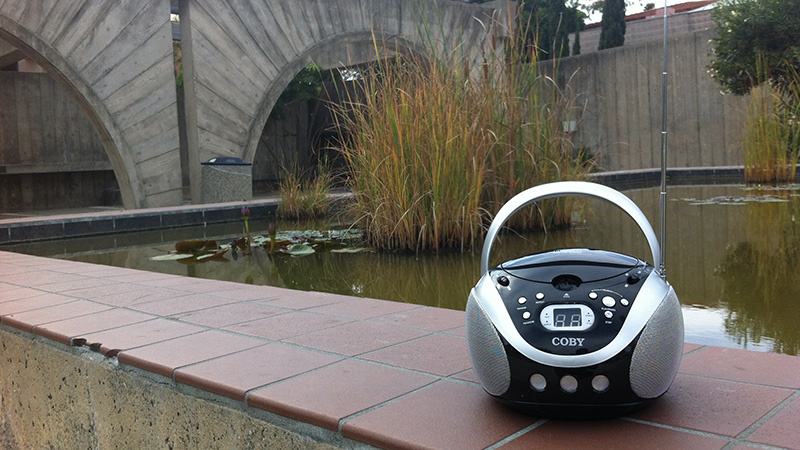
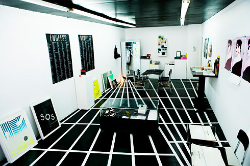
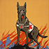

Wireless
Curated Wireless, a group exhibition featuring an international roster of artists exploring themes of radio transmission and communications. Presented in honor of the 50th anniversary of community radio station KCSB, the exhibit showcased artists residing in New York, Berlin, London, and Santa Barbara whose work is similarly concerned with the conveyance of ideas, memories, and objects across distances long and short.
{kind=link}

Selected Exhibition History
- Daniel Turner and Colin Snapp: Good Game, June 24, 2010, curator. Recess Art,New York, NY.
- Saturn Return, June 4 – July 31, 2010, curator. Wallspace New York, NY.
- Everything Must Out Going, May 30 – June 6, 2009, curator. Asia Song Society, New York, NY.
- Leo Fitzpatrick, F**k Friends, April 17-May 13, 2009, curator. Asia Song Society, New York, NY. (catalog)
- Orchid Pavilion, April 4, 2009, curator. Asia Song Society, New York, NY.
- O Zhang, The Stream Bends for a Thousand Li, March 13-April 3, 2009, curator. Asia Song Society, New York, NY.
- 2008 Whitney Biennial, March 5 – June 22, 2008, curatorial assistant. Whitney Museum of American Art, New York, NY.(catalog)
- Call for Entries 2006-2007: True Métier, September 8–November 3, 2007, co-curator. Museum of Contemporary Art Santa Barbara, Santa Barbara, CA. (catalog)
- Bloom Projects: Delia Gonzalez and Gavin Russom, Tomorrow Belongs to Me, April 28–June 24, 2007, curator. Museum of Contemporary Art Santa Barbara, Santa Barbara, CA. (brochure)
- Call for Entries 2005–2006: Something New for Another Sunny Day, September 2–October 27, 2005, co- curator. Museum of Contemporary Art Santa Barbara, Santa Barbara, CA. (catalog)
- Unearthed, Graham Bury and Danielle Rubi, September 30, 2006, curator. Collaboration with Off-Axis: Santa Barbara Contemporary Arts Month, Santa Barbara, CA. (brochure)
Categories
Recent Projects
-  Archives and Collections
-
 Preservation
Preservation
-
 Learning Tools and Games
Learning Tools and Games
-
 Prototypes and Front End
Prototypes and Front End
Search